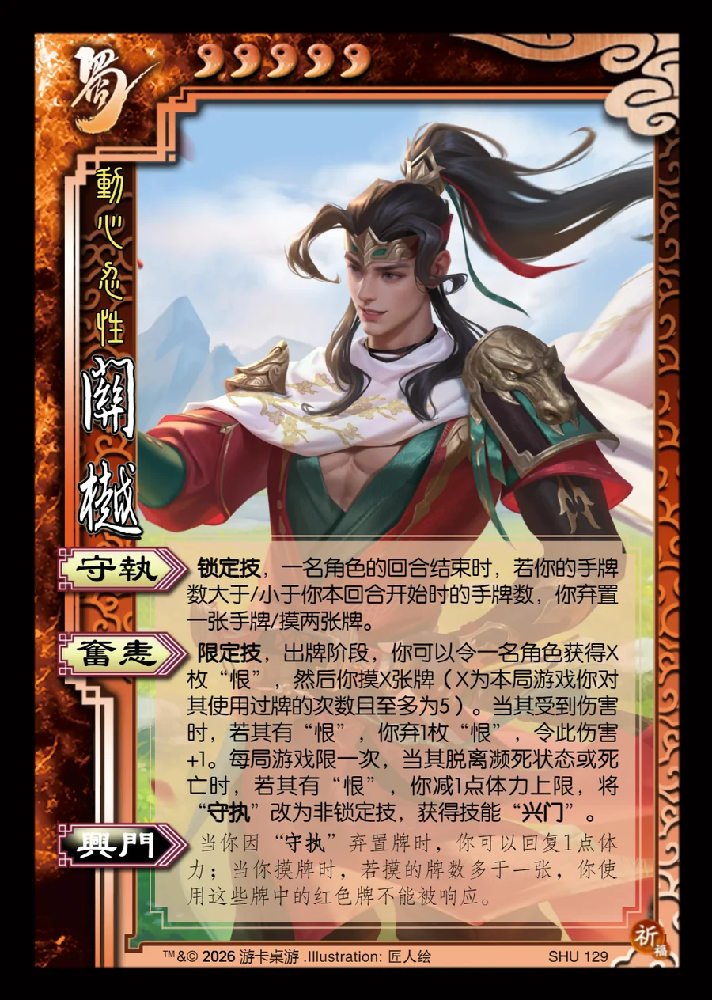

点击卡面查看大图
蜀
关樾
♥5动心忍性
守执锁定技
锁定技，一名角色的回合结束时，若你的手牌数大于/小于你本回合开始时的手牌数，你弃置一张手牌/摸两张牌。
奋恚限定技
限定技，出牌阶段，你可以令一名角色获得X枚“恨”，然后你摸X张牌（X为本局游戏你对其使用过牌的次数且至多为5）。当其受到伤害时，若其有“恨”，你弃1枚“恨”，令此伤害+1。每局游戏限一次，当其脱离濒死状态或死亡时，若其有“恨”，你减1点体力上限，将“守执”改为非锁定技，获得技能“兴门”。
兴门衍生
当你因“守执”弃置牌时，你可以回复1点体力；当你摸牌时，若摸的牌数多于一张，你使用这些牌中的红色牌不能被响应。